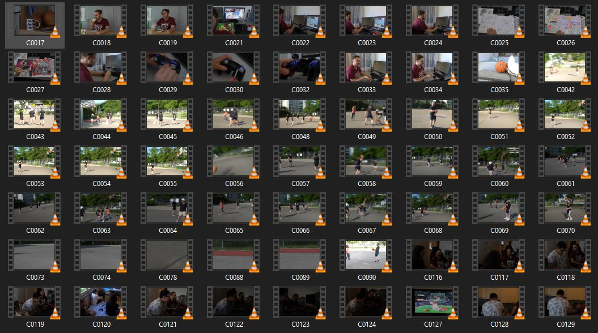
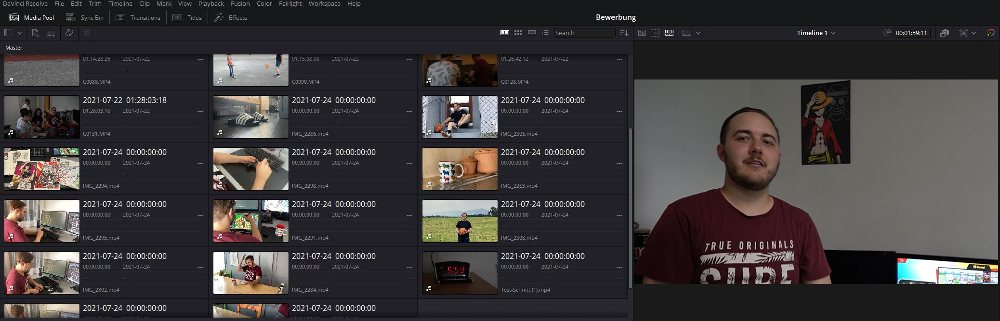
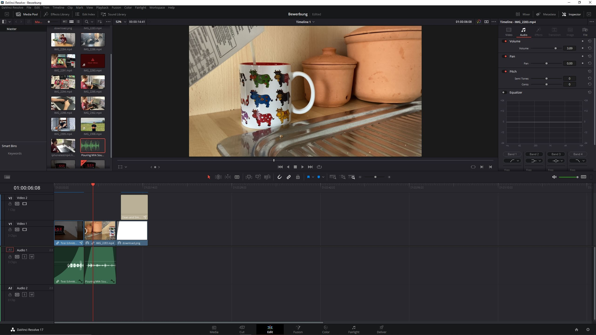
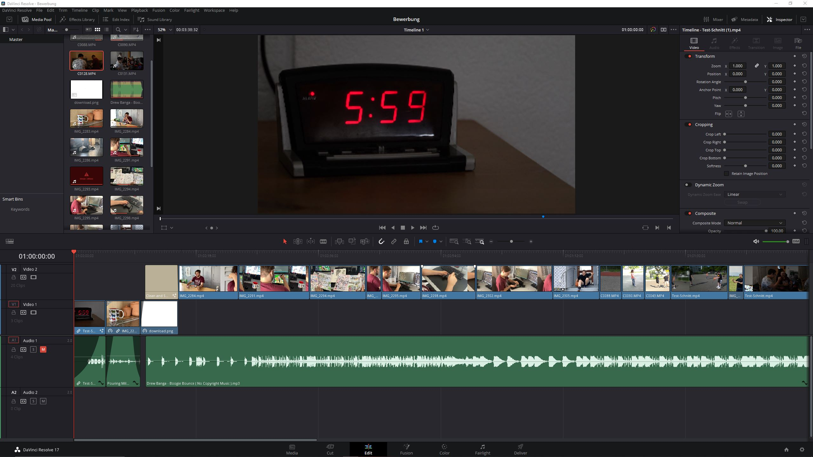
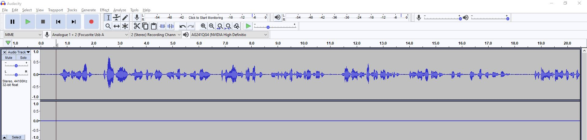
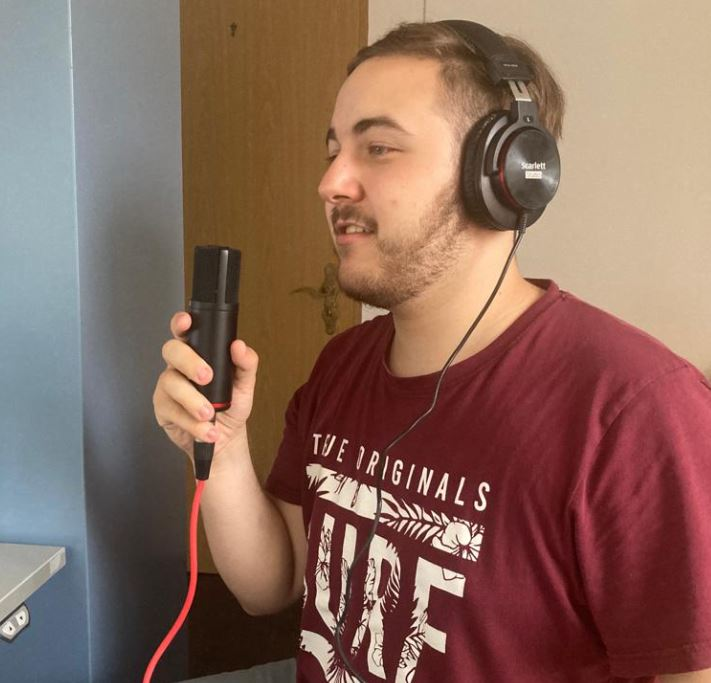

VIDEO EDITING
Rohmaterial bearbeiten
Zuerst exportierte ich unser gesamtes Filmmaterial in einen Ordner und schaute mir an welche Clips zu gebrauchen sind. Da wir relativ viele Aufnahmen mehrmals gedreht hatten, gab es schon viel Material, das ich löschen konnte.
 
Danach exportiere ich die Video Clips in Davinci Resolve, das Programm welches ich zum Schnitt verwendete. Ich zog die Clips der Reihe nach in die Timeline und Schnitt sie schon einmal grob zurecht. Auf YouTube suchte ich mir einen passenden Song aus und fügte ihn ins Video hinein und schnitt die Clips einigermassen passend zur Audio zurecht.
 
Mit meinen eigenen Mikrofon nahm ich im Programm Audocity meine Stimme auf. Auch hier gab es mehrere Versuche, doch ich konnte die Audiospur direkt in Audacity zurecht schneiden und ins Video exportieren. Als allerletzter Schritt korrigierte ich die Farbe und Länge einiger Clips und passte die Audiospur meiner Stimme an, da sie an manchen Stellen etwas leise war. Audacity ist auch das Programm welches ich benutze um in Videospielen Sound Effects und Musik zu bearbeiten. Danach musste ich das Video nur noch rendern und schon war ich mit dem Projekt fertig. Ich habe schon viel Erfahrung im Schnitt, da wir in der Schule ein paar Filmprojekte hatten und ich mich immer freiwillig zum Schnitt meldete. Das Editieren und der ganze Prozess des Filmemachens macht mir unheimlich Spass. Ich liebe es sowohl vor und hinter der Kamera zu sitzen.
 